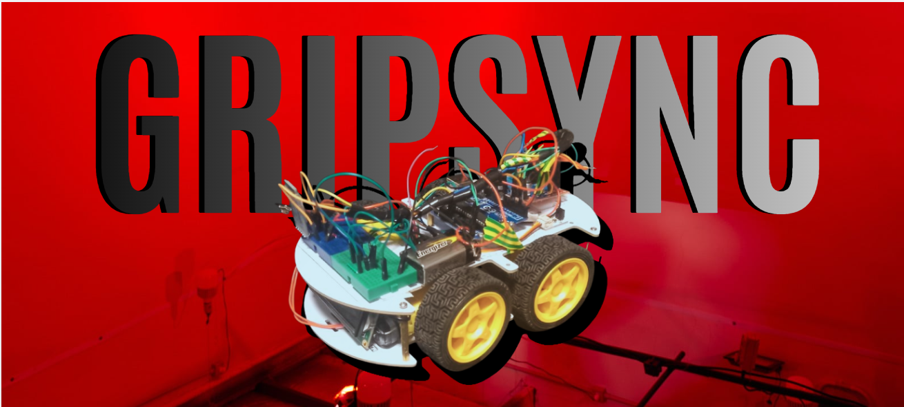
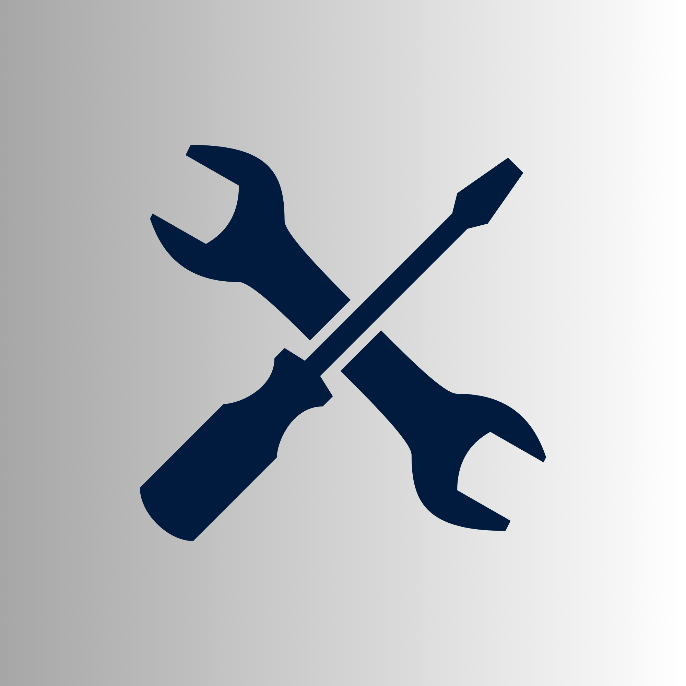
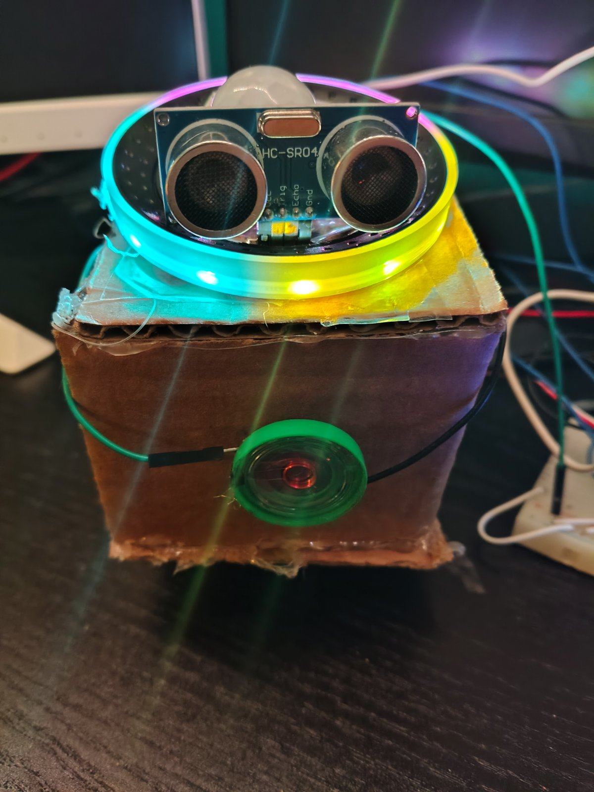
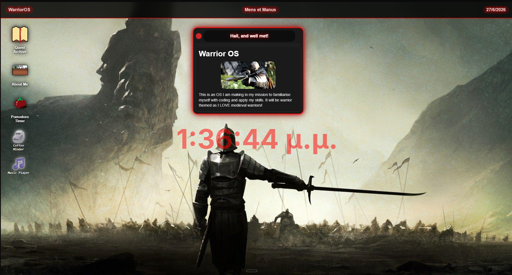
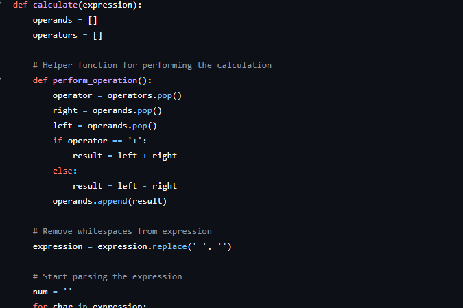
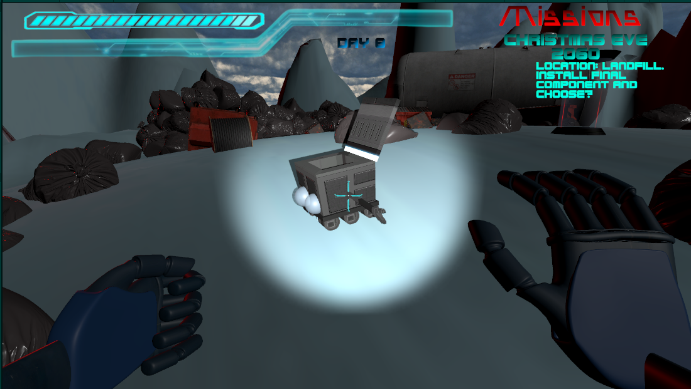
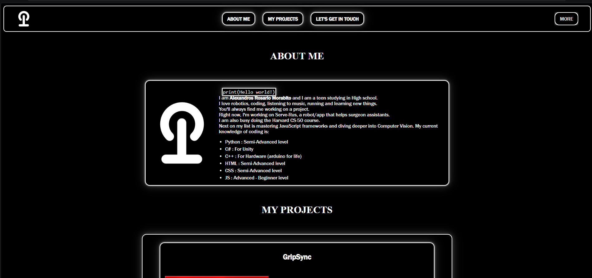
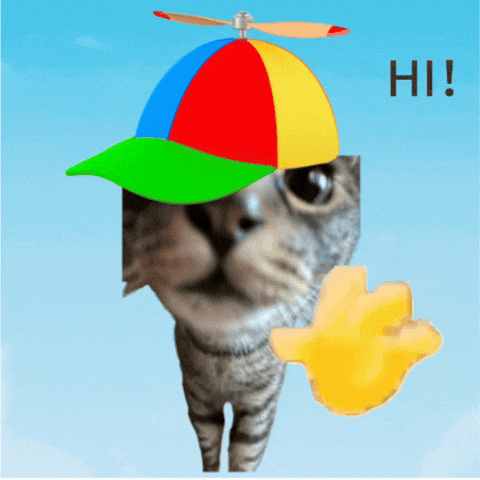
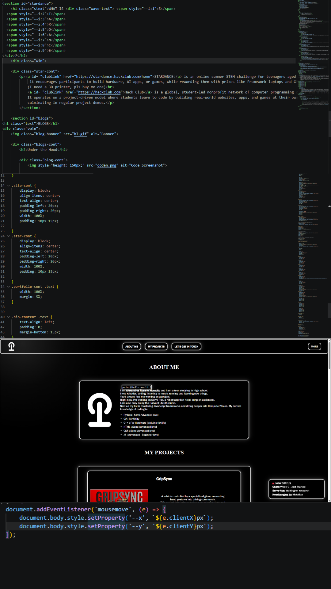

CS50: Week 0 - Just Started
Serve-Rus: Waiting on research
Headbanging to: Metalica
print(Hello world!)
I am Alexandros Rosario Morabito and I am a teen studying in High school.
I love robotics, coding, listening to music, running and learning new things.
You'll always find me working on a project.
Right now, I'm working on Serve-Rus, a robot/app that helps surgeon assistants.
I am also busy doing the Harvard CS-50 course.
Next on my list is mastering JavaScript frameworks and diving deeper into Computer Vision.
My current knowledge of coding is:

A vehicle controlled by a specialized glove, converting hand gestures into driving commands.
This project integrates robotics, sensor technology, and wireless control, demonstrating how persistence and teamwork can transform failure into success.

A Slack native app that is designed for recruiters and people who try to network between them and find individuals with certain skills to be able to communicate better and link up quicker than using dozens of apps like LinkedIn, WhatsApp Messenger, and while also being in their the digital workplace.

Axel is a desk companion that keeps you working while teaching you some fan facts about robotics.Don't scare him or he will ragequit.Sometimes he gets a bit to bossy.

This project is a web-based operating system that I created from scratch using JavaScript, CSS, and HTML. I used the guide from Hacklab flavourtown and this is a project I will ship in Hacklab Stardance.

A compilation of small projects such as a calculator and a basic morse code encoder. See more on this GITHUB REPO

A compilation of small projects such as a 2D rpg and a basic platformer game + A BIG PROJECT. Contact me if you want to see a project.

A website I made with the guidance of the stardance Program.Find out more about it on the SITE SECTION and on the UNDER THE HOOD BLOG
Let me first state that I generaly LOVE learning by doing. It helps me grasp better what I learn and actualy see it in practice.
So consequently when I saw the program STARDANCE that hackclub was hosting I joined.
it offered a wide variety of guided projects you could make one of the ones I ended up making was this site that is basically a personal site simillar to a buisness card.
Now that you know that, I ll explain why I chose to built it.
I am an HS student with very HIGH hopes and not many people share my interests where I live.
So what's the best ways to meet people alike, show them what I know, learn about basic web dev and to introduce myself.
YOU GOT IT!
an HTML personal site that shows I know the basics of web development.
STARDANCE is an online summer STEM challenge for teenagers aged 13 to 18, run by the nonprofit Hack Club in partnership with AMD, NASA, and GitHub. Running until September 30,
it encourages participants to build hardware, AI apps, or games, while rewarding them with prizes like Framework laptops and GPUs.
(I need a 3D printer, pls buy me one)
Hack Club is a global, student-led nonprofit network of computer programming clubs and a maker community for teenagers aged 13–18.
It operates on a project-driven model where students learn to code by building real-world websites, apps, and games at their own pace,
culminating in regular project demos.


Welcome to my first vlog! Here I will upload all sorts of content, from behind the scenes on projects of mine to small research and showcases of projects more analytical than GitHub.
My first blog is the "Under the Hood" of this personal site. So I started off like the guide suggests by making a title for the page and a description of this site and its purpose. Subsequently, I made the Header (top navigation bar) and added only the About Me, Portfolio, and Contact Me links and sections.
I afterwards proceeded to make the UI by formatting the divs and aligning everything. It was very challenging at first given I had little knowledge of CSS. However, because I had previously made Warrior OS, I knew how to add the highlight to make the UI prettier. Therefore I advanced to make the rest of the sections using Ctrl + C and Ctrl + V EXCESSIVELY.
After all of that, I decided to make a dropdown for the navigation bar and keep only the 3 most important sections on the bar. I googled some staff and after lots of debugging I was able to make one. A big thanks to W3SCHOOLS.
Then I immediately started working on the cursor glow where I searched on the W3SCHOOLS JAVASCRIPT DOCUMENTATION to learn the basic mouse events. Lastly, I added a Live status bar which was easy enough to make and a very fun idea I thought would give more personality to this site!